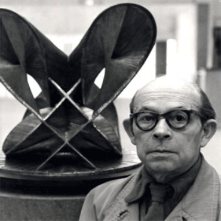
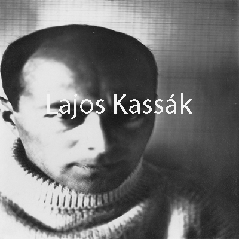
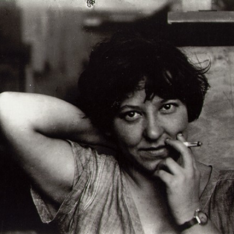

Vladímir Yevgráfovich Tatlin (Владимир Евграфович Татлин), fue uno de los más importantes constructivistas rusos. Su arte parece no entender de barreras entre las distintas disciplinas: le daba a la escultura, pintura, arquitectura, ingeniería, diseño… Un hombre del renacimiento en plena Revolución Rusa, que contó con él para ambiciosos proyectos, algunos de los cuales tan grandilocuentes que no pudieron llegarse a construir.
En 1914 fundó, junto a otros artistas, el Constructivismo. Antes había visitado París y entró en contacto con artistas como Picasso. El malagueño le impresionó tanto que volvió a su tierra con ideas frescas. El vanguardismo había entrado en otro nivel.
Nada más llegar, Tatlin quiso promover algo tan radical como la muerte del arte del museo: «la Obra debe participar en la vida y en la construcción del mundo».
Triunfada la Revolución Rusa dirigió con su colega Rodchenko el VJUTEMÁS (Talleres Superiores Artísticos y Técnicos del Estado) una de las primeras escuelas de Diseño en el mundo instalada en Rusia que influyó notablemente en todo el arte occidental.
Tatlin alcanzó la fama mundial como el arquitecto que diseñó el colosal Monumento a la Tercera Internacional, o Torre de Tatlin, un edificio mayor que la Torre Eiffel construído con cristal y acero que giraría todo el año, pero a causa de los problemas económicos del país en ese momento se quedó en un proyecto.
También le debemos a Tatlin el contrarrelieve, una escultura para colocar en la esquina de una pared que significó toda una revelación escultórica. El cristal y el acero significaban el futuro de su país.
Al final de su vida empezó a investigar el vuelo de los pájaros, con el fin de conseguir uno de los grandes sueños de la humanidad: volar. De hecho inventó una máquina voladora de energía limpia llamada Letatlin (letat significa volar en ruso).
Antoine Pevsner

(Anton o Antoine Pevsner; Orel, 1886 - París, 1962) Escultor francés de origen ruso. Tras seguir estudios en la Academia de Bellas Artes de San Petersburgo, viajó en 1911 a París, donde admiró los trabajos de Robert Delaunay, Albert Gleizes, Jean Metzinger y Fernand Léger. En una segunda visita a París, en 1913, conoció a Modigliani y a Archipenko, que estimularon su interés por el cubismo. Durante la Primera Guerra Mundial permaneció en Oslo; volvió a Rusia en 1917 y enseñó en la Academia de Bellas Artes de Moscú.En 1920, Antoine Pevsner y su hermano Naum Gabo publicaron el Manifiesto Realista, en donde se afirmaba que el arte tiene un valor absolutamente independiente y una función que desempeñar en la sociedad. Las investigaciones de ambos artistas buscaban la expresividad propia de los materiales y las formas, independizadas de la naturaleza, pero también de cualquier otro condicionamiento externo, ideológico o social. En el manifiesto defendieron un constructivismo formalista frente al de carácter productivista. Las diferencias entre las dos opciones son ideológicas, pero ambas se fundamentan en un arte que incorpora los nuevos materiales industriales, y comparten además un mismo sentido de la belleza, hecho de planos articulados libremente en el espacio.
En 1923 visitó Berlín, donde conoció a Marcel Duchamp y a Catherine Dreier. A partir de su encuentro con Duchamp, Pevsner abandonó la pintura y se volcó en la escultura constructivista. Luego se instaló definitivamente en París, obteniendo la ciudadanía francesa en 1930. En París, Antoine Pevsner y Naum Gabo lideraron la tendencia constructivista en Abstracción-Creación, un grupo de artistas que representaba diversas corrientes del arte abstracto y al que también pertenecían escultores y pintores como Jean Arp, Piet Mondrian y Wassily Kandinsky. En los años treinta, las obras de Pevsner se expusieron en Amsterdam, Basilea, Londres, Nueva York y Chicago.
Antoine Pevsner exploró nuevos conceptos escultóricos centrándose sobre todo en el desarrollo de formas en el espacio. Esto es perfectamente observable tanto en Superficie desenrollable (1936, Colección privada, Bélgica) como en Proyección dinámica al grado 30 (1951, The Baltimore Museum of Art). La exploración de las conjunciones de planos y las tensiones e interacciones de las líneas de fuerza de sus composiciones geométricas fueron los factores primordiales de su investigación plástica y matemática, que, en lo que a los materiales se refiere, se asentó fundamentalmente en el uso de estructuras, láminas e hilos metálicos. Sus esculturas, construidas en gran parte con elementos metálicos, se organizan alrededor de un eje central, en torno del cual se acumulan estructuras y planos.
Lajos Kassák

Lajos Kassák, nacido en Érsekújvár el 21 de marzo de 1887, pertenecía a la clase obrera húngara. Durante su juventud se unió al movimiento socialista, y durante esta época también viajó por toda Hungría y al extranjero. En esta época entró en contacto con los diversos -ismos europeos (expresionismo, futurismo, cubismo, constructivismo, surrealismo y dadaísmo), los cuales contribuyeron a su evolución como artista, aunque no se adscribiera de manera total ni definitiva a ninguno de ellos.
Aunque sus primeras poesías muestran una clara influencia de Walt Whitman, ya su primer libro de poemas, Épica en la máscara de Wagner (1915) muestra un estilo personal, y una lucha entre la expresión individual y la expresión universal, sobrepasando la conciencia de clase. A pesar de esta vocación de universalidad, su poema "Artesanos" (1915) evoca la supremacía de los valores de la clase obrera, afirmando orgullosamente los logros de los trabajadores y su solidaridad internacional. Este poema fue publicado en Acción, la primera de las revistas de vanguardia creadas por Kassák. A ésta le siguieron Hoy (en húngaro Ma, publicada en Budapest entre 1916-19, y luego en Viena 1920-6), Documento (1926-7), Trabajo (1928-39), y finalmente Creación (1947). Aunque estas revistas tuvieron en general una vida efímera, y solieron terminar prohibidas por los sucesivos regímenes políticos, su significación, dentro y fuera de Hungría, es enorme, ya que contienen muestras de arte de vanguardia de toda Europa, incluyendo autores tan reputados como László Moholy-Nagy (1895-1946) o Victor Vasarely (1908-1997).
Varvara Fiódorovna Stepánova

Varvara Fiódorovna Stepánova (Варва́ра Фёдоровна Степа́нова) fue una artista rusa que se convirtió en uno de los pilares del constructivismo, movimiento que promovió junto a su compañero y colaborador Alexander Rodchenko.
De familia campesina, pudo tener una buena educación en la Escuela de Arte de Kazán. Allí conoció a Rodchenko y desde entonces colaboraron codo con codo para buscar un arte nuevo.
Antes de la Revolución Rusa, vivió con Rodchenko y Kandinsky en un mismo apartamento. Imagináos la creatividad de estos tres jóvenes que acabarían revolucionando el arte cada uno a su manera.
Durante la revolución abanderó la vanguardia rusa y fue un ejemplo de la lucha por la emancipación de la mujer. Apoyada por el estado- algo inusual- ayudó con su arte a tomar medidas importantes para mejorar el estatus social de la mujer (legislaciones en materia de costumbres, derecho de las mujeres a la jornada de 8 horas, a negociar salarios), en definitiva, unos derechos políticos idénticos a los hombres.
Stepánova, antes de militar en el constructivismo, había diseñado obras «cubofuturistas» y varios libros y cuando el movimiento se convirtió en la principal vanguardia, no sólo rusa sino mundial, se convirtió en una de las principales diseñadoras del comunismo visual, una estética que aún se puede apreciar hoy en día.